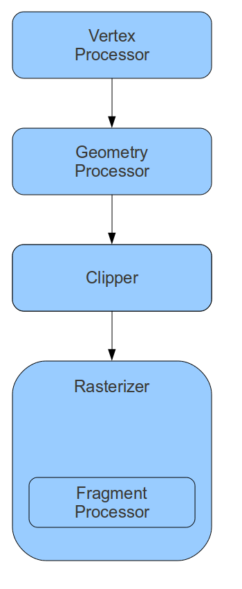

Background
From this tutorial forward every effect and technique we will implement will be done using shaders. Shaders are the modern way of doing 3D graphics. In a way you could claim that this is a step back as most of the 3D functionality that was provided by the fixed function pipeline and required the developer to only specify configuration parameters (lighting attributes, rotation values, etc) must now be implemented by the developer (via shaders), however, this programmability enables great flexibility and innovation.
The OpenGL programmable pipeline can be visualized as follows:
The vertex processor is in charge of executing the vertex shader on each and every vertex that passes through the pipeline (the number of which is determined according to the parameters to the draw call). Vertex shaders have no knowledge about the topology of the rendered primitives. In addition, you cannot discard vertices in the vertex processor. Each vertex enters the vertex processor exactly once, undergoes transformations and continues down the pipe.
The next stage is the geometry processor. In this stage the knoweldge as to the complete primitive (i.e. all of its vertices) as well as neighboring vertices is provided to the shader. This enables techniques that must take into account additional information beside the vertex itself. The geometry shader also has the ability to switch the output topology to a different one than the topology selected in the draw call. For example, you may supply it with a list of points and genereate two triangles (i.e. a quad) from each point (a technique known as billboarding). In addition, you have the option to emit multiple vertices for each geometry shader invocation and thus generate multiple primitives according to the output topology you selected.
The next stage in the pipe is the clipper. This is a fixed function unit with a straightforward task - it clips the primitives to the normalized box we have seen in the previous tutorial. It also clips them to the near Z and the far Z planes. There is also the option to supply user clip planes and have the clipper clip against them. The position of vertices that have survived the clipper is now mapped to screen space coordinates and the rasterizer renders them to the screen according to their topology. For example, in the case of triangles this means finding out all the points that are inside the triangle. For each point the rasterizer invokes the fragment processor. Here you have the option to determine the color of the pixel by sampling it from a texture or using whatever technique you desire.
The three programmable stages (vertex, geometry and fragment processors) are optional. If you don't bind a shader to them some default functionality will be executed.
Shader management is very similar to C/C++ program creation. First you write the shader text and make it available to your program. This can done by simply including the text in an array of characters in the source code itself or by loading it from an external text file (again into an array of characters). Then you compile the shaders one by one into shader objects. After that you link the shaders into a single program and load it into the GPU. Linking the shaders gives the driver the opportunity to trim down the shaders and optimize them according to their relationships. For example, you may pair a vertex shader that emits a normal with a fragment shader that ignores it. In that case the GLSL compiler in the driver can remove the normal related functionality of the shader and enable faster execution of the vertex shader. If that shader is later paired with a fragment shader that uses the normal then linking the other program will generate a different vertex shader.
Source walkthru
GLuint ShaderProgram = glCreateProgram();
We start the process of setting up our shaders by creating a program object. We will link all the shaders together into this object.
GLuint ShaderObj = glCreateShader(ShaderType);
We create two shader objects using the above call. One of them with shader type GL_VERTEX_SHADER and the other GL_FRAGMENT_SHADER. The process of specifying the shader source and compiling the shader is the same for both.
const GLchar* p[1];
p[0] = pShaderText;
GLint Lengths[1];
Lengths[0]= strlen(pShaderText);
glShaderSource(ShaderObj, 1, p, Lengths);
Before compiling the shader object we must specify its source code. The function glShaderSource takes the shader object as a parameter and provides you with flexibility in terms of specifying the source. The source can be distributed across several character arrays and you will need to provide an array of pointers to these arrays as well as an array of integers where each slot contains the length of the corresponding character array. For simplicity we use a single array of chars for the entire shader source and we use just one slot for both the pointer to the source as well as its length. The second parameter to the call is the number of slots in the two arrays (just 1 in our case).
glCompileShader(ShaderObj);
Compiling the shader is very easy...
GLint success;
glGetShaderiv(ShaderObj, GL_COMPILE_STATUS, &success);
if (!success) {
GLchar InfoLog[1024];
glGetShaderInfoLog(ShaderObj, sizeof(InfoLog), NULL, InfoLog);
fprintf(stderr, "Error compiling shader type %d: '%s'\n", ShaderType, InfoLog);
}
...however, you usually get a few compilation errors, as expected. The piece of code above gets the compilation status and display all the errors the compiler encountered.
glAttachShader(ShaderProgram, ShaderObj);
Finally, we attach the compiled shader object to the program object. This is very similar to specifying the list of objects for linking in a makefile. Since we don't have a makefile here we emulate this behavior programatically. Only the attached objects take part of the linking process.
glLinkProgram(ShaderProgram);
After compiling all shader objects and attaching them to the program we can finally link it. Note that after linking the program you can get rid of the intermediate shader objects by calling glDetachShader and glDeleteShader for each and every one of them. The OpenGL driver maintains a reference count on most of the objects it generates. If a shader object is created and then deleted the driver will get rid of it, but if it is attached to a program calling glDeleteShader will only mark it for deletion and you will also need to call glDetachShader so that its reference count will drop to zero and it will be removed.
glGetProgramiv(ShaderProgram, GL_LINK_STATUS, &Success);
if (Success == 0) {
glGetProgramInfoLog(ShaderProgram, sizeof(ErrorLog), NULL, ErrorLog);
fprintf(stderr, "Error linking shader program: '%s'\n", ErrorLog);
}
Note that we check for program related errors (such as link errors) a bit differently than shader related errors. Instead of glGetShaderiv we use glGetProgramiv and instead of glGetShaderInfoLog we use glGetProgramInfoLog.
glValidateProgram(ShaderProgram);
You may ask yourself why do we need to validate a program after it has been successfully linked. The difference is that linking checks for errors based on the combination of shaders while the call above check whether the program can execute given the current pipeline state. In a complex application with multiple shaders and lots of state changes it is better to validate before every draw call. In our simple app we check it just once. Also, you may want to do this check only during development and avoid this overhead in the final product.
glUseProgram(ShaderProgram);
Finally, to use the linked shader program you set it into the pipeline state using the call above. This program will stay in effect for all draw calls until you replace it with another or explicitly disable its use (and enable the fixed function pipeline) by calling glUseProgram with NULL. If you created a shader program that contains only one type of shader then the other stages operate using their default fixed functionality.
We have completed the walkthru of the OpenGL calls related to shader management. The rest of this tutorial relates to the contents of the vertex and fragment shaders (contained in the 'pVS' and 'pFS' variables).
#version 330
This tells the compiler that we are targeting version 3.3 of GLSL. If the compiler does not support it it will emit an error.
layout (location = 0) in vec3 Position;
This statement appears in the vertex shader. It declares that a vertex specific attribute which is a vector of 3 floats will be known as 'Position' in the shader. 'Vertex specific' means that for every invocation of the shader in the GPU the value of a new vertex from the buffer will be supplied. The first section of the statement, layout (location = 0), creates the binding between the attribute name and attribute in the buffer. This is required for cases where our vertex contains several attributes (position, normal, texture coordinates, etc). We have to let the compiler know which attribute in the vertex in the buffer must be mapped to the declared attribute in the shader. There are two ways to do this. We can either set it explicitly as we do here (to zero). In that case we can use a hard coded value in our application (which we did with the first parameter to the call to glVertexAttributePointer). Or we can leave it out (and simply declare 'in vec3 Position' in the shader) and then query the location from the application at runtime using glGetAttribLocation. In that case we will need to supply the returned value to glVertexAttributePointer instead of using the hard coded value. We choose the simply way here but for more complex applications it better to let the compiler determine the attribute indices and query them during runtime. This makes it easier integrating shaders from multiple sources without adapting them to your buffer layout.
void main()
You can create your shader by linking together multiple shader objects. However, there can only be one main function for each shader stage (VS, GS, FS) which is used as the entry point to the shader. For example, you can create a lighting library with several functions and link it with your shader provided that none of the functions there is named 'main'.
gl_Position = vec4(0.5 * Position.x, 0.5 * Position.y, Position.z, 1.0);
Here we do hard coded transformation to the incoming vertex position. We cut the X and Y values by half and leave the Z unchanged. 'gl_Position' is a special built in variable that is supposed to contain the homogeneous (containing X, Y, Z and W components) vertex position. The rasterizer will look for that variable and will use it as the position in screen space (following a few more transformations). Cutting the X and Y values by half means that we will see a triangle which is one quarter the size of the triangle in the previous tutorial. Note that we are setting W to 1.0. This is extremely important to getting the triangle displayed correctly. Getting the projection from 3D to 2D is actually accomplished in two seperate stages. First you need to multiply all your vertices by the projection matrix (which we will develop in a few tutorials) and then the GPU automatically performs what is known as "perspective divide" to the position attribute before it reaches the rasterizer. This means that it divides all the components of the gl_Position by the W component. In this tutorial we are not yet doing any projection in the vertex shader but the perspective divide stage is something that we cannot disable. Whatever gl_Position value we output from the vertex shader will be divided by the HW using its W component. We need to remember that else we will not get the results we expect. In order to circumvent the effect of perspective divide we set W to 1.0. Division by 1.0 will not affect the other components of the position vector which will stay inside our normalized box.
If everything worked correctly, three vertices with the values (-0.5, -0.5), (0.5, -0.5) and (0.0, 0.5) reach the rasterizer. The clipper doesn't need to do anything because all vertices are well inside the normalized box. These values are mapped to screen space coordinates and the rasterizer starts running over all the points that are inside the triangle. For each point the fragment shader is executed. The following shader code is taken from the fragment shader.
out vec4 FragColor;
Usually the job of the fragment shader is to determine the color of the fragment (pixel). In addition, the fragment shader can discard the pixel altogether or change its Z value (which will affect the result of subsequent Z test). Outputing the color is done by declaring the above variable. The four components represent R, G, B and A (for alpha). The value that you set into this variable will be received by the rasterizer and evantually written to the framebuffer.
FragColor = vec4(1.0, 0.0, 0.0, 1.0);
In the previous couple of tutorials there wasn't a fragment shader so the everything was drawn in the default color of white. Here we set FragColor to red.
For more information on this subject check out the following video tutorial by Frahaan Hussain.
Next tutorial